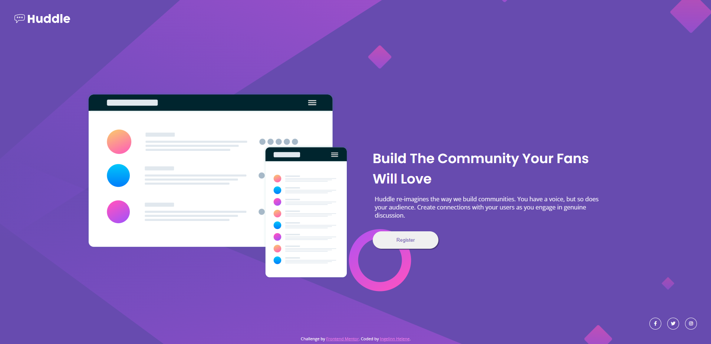
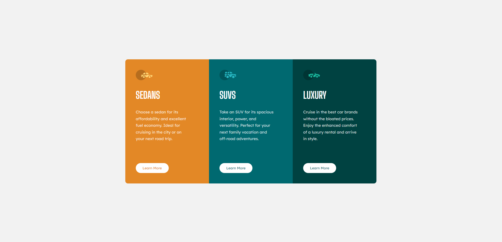
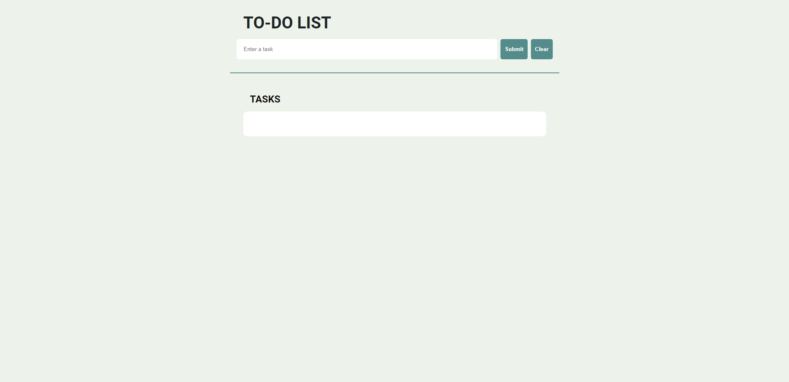
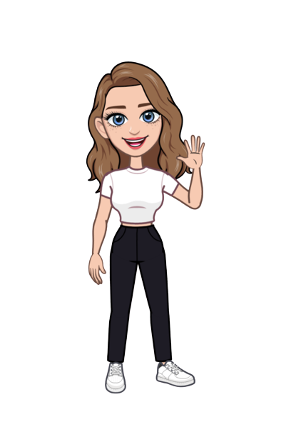

Ingelinn Helene
/-in•geh•linn he•le•neh/
Front-end developer.
Recent projects.



About me.

Hello world!
I'm Ingelinn and I love creating things for online use.
My interest first surfaced when I started editing custom Tumblr themes as a teenager. Being creative with HTML, CSS and Adobe Photoshop CS was something I enjoyed for many years, though it was only a hobby at the time.
Fast-forward to today, and I realise that I want to make a living out of this. While I'm certified as a technician in the field of computer electonics and have experience in electronics production, I feel much more drawn towards front-end development and UX/UI design.
When I'm not busy learning to code I like to work out, play Lost Ark andTeamfight Tacticts, or get lost in a fantasy book series.